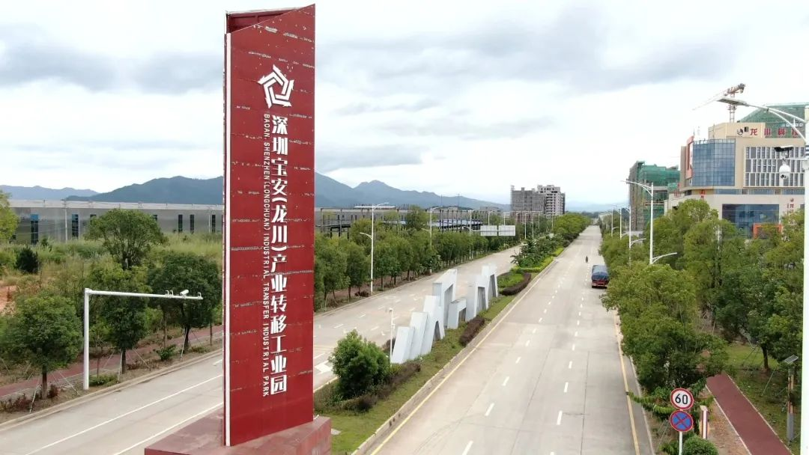

一产有底气
龙川县拥有省级现代农业产业园，正在全力推进“一镇一园”全覆盖，农业加工基地，省粤东片区粮油和农产品贸易物流园建设，打造大湾区的“米袋子”“菜篮子”“果盘子”“油瓶子”。如今龙川县的乡村产业蓬勃发展，成果丰硕，底气十足。
龙川山茶油
龙川山泉水产业
奶牛养殖

菜篮子基地
隆奇橙果园
二产有动力

龙川县靠工业起家
以工业发家，虽是“弹丸之地”，但依靠龙川人的敢打敢拼，发展出了电子信息、建筑工业、应急与节能、先进材料现代轻工纺织“4+1”主导产业，以及一大批国家级、省级“专精特新”企业，并在全市率先推行“代办制”“包办制”服务。以服务新模式全面实施精准服务机制，着力打造优良营商环境。
深圳宝安（龙川）产业转移工业园位于龙川通衢、登云两镇交界处，总规划面积30.63平方公里，目前开发面积7平方公里。现有72家规模以上工业企业，其中年产值超亿元17家。2023年1月―3月，全社会工业增加值同比增长6.3%，规模以上工业增加值同比增长6.3%，实际利用外商直接投资(境外)同比增长550.0%，均排名全市前列。龙川县工业园相继获评“五星级服务园区”“低碳园区”“风云园区”“中国空气能产业基地”“省优秀园区”“中国营商环境百强县区”等殊荣。
三产有活力
龙川县的交通
逢山开路、遇水架桥
坐拥赣深高铁，以及京九铁路、广梅汕铁路。梅龙高铁预计明年通车，龙龙高铁、广河高铁、龙韶铁路、龙汕铁路正在抓紧建设，“融深”“融湾”步伐进一步加快。
龙川西站
龙川县还有四通八达的公路网
河梅高速、广龙高速、汕昆高速、河惠莞高速，以及将在今年通车的龙寻高速，正在建设中的连梅高速，更有风景优美的“四好农村路”。
一道道通途见证着龙川县交通运输事业翻天覆地的变化 。